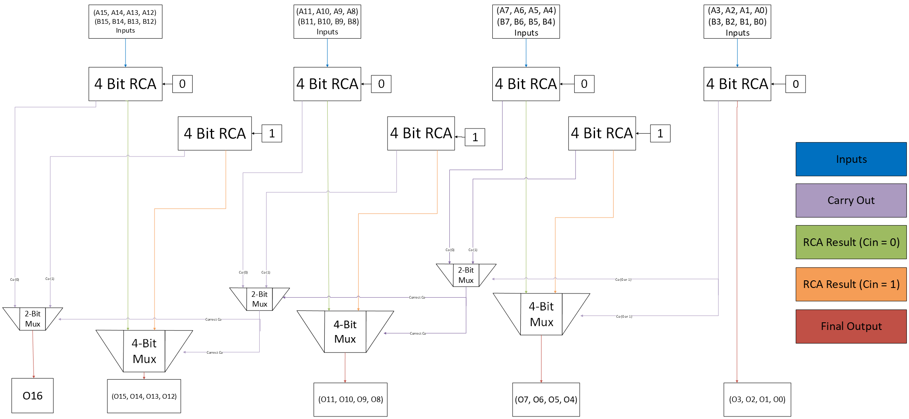

VLSI Design | Purdue University
16-Bit Carry Select Adder
This project focused on designing, laying out, and validating a custom 16-bit carry-select adder in Cadence Virtuoso. The work covered transistor-level gate construction, hierarchical block design, DRC/LVS-clean layout, and worst-case timing and energy analysis.
The final design met the project requirements with a schematic delay of 410.4 ps average, a layout delay of 1.245 ns, and an estimated layout energy of 366.9 fJ after post-layout analysis. The assignment required the adder to stay below 2 ns worst-case delay and 700 fJ energy, so the project ultimately validated both the circuit architecture and the physical implementation.
Beyond the final numbers, the project was a good demonstration of how transistor sizing, full-adder topology choice, hierarchical design, and extracted layout behavior all affect real performance in VLSI work.
Overview
The design goal was to create a 16-bit carry-select adder that met strict performance constraints while remaining DRC-clean and LVS-clean after layout extraction. The CSA architecture was chosen to reduce carry propagation delay compared to a standard ripple-carry adder.
The final implementation divided the 16-bit addition into 4-bit blocks, using one ripple-carry adder for the least significant bits and three carry-select blocks for the remaining sections.
Design Constraints
- 16-bit adder width with 4-bit subdivision blocks
- Worst-case propagation delay less than or equal to 2 ns
- Energy consumption less than or equal to 700 fJ
- 50 ps input rise and fall times
- 2 fF output load for evaluation
- DRC-clean and LVS-clean post-layout validation
Architecture
- The first 4 bits are handled by a 4-bit ripple-carry adder because the carry-in is known at the start.
- The upper 12 bits are split into three 4-bit carry-select blocks.
- Each carry-select block computes two outcomes in parallel: carry-in equals 0 and carry-in equals 1.
- 2-bit multiplexers select the correct carry-out and 4-bit multiplexers select the correct summed outputs.
- The final system is composed of seven 4-bit RCAs, three 2-bit MUXes, and three 4-bit MUXes.
Implementation Notes
- Logic gates were sized to balance rise and fall propagation delays.
- A mirror-topology full adder was selected after a gate-based implementation exceeded the timing requirement.
- Hierarchical block construction simplified the final schematic and layout process.
- The layout was completed in Cadence Virtuoso XL using two metal layers.
- Post-layout extraction was used to compare ideal schematic behavior against physical implementation behavior.

Measured Results
- Schematic Worst-Case Delay 394.1 ps rising, 426.7 ps falling, for a 410.4 ps average.
- Schematic Worst-Case Energy 121.1 fJ, comfortably within the 700 fJ project limit.
- Layout Worst-Case Delay 1.245 ns from the least significant input to the most significant output.
- Layout Energy Estimate 366.9 fJ estimated using proportional scaling after the direct layout calculation returned an eval error.
Takeaways
The project successfully met the timing and energy constraints at both the schematic and layout levels, validating the CSA as an efficient architecture for this assignment. One of the most useful insights was how much implementation details matter after extraction: post-layout analysis materially changed the observed performance and made the extracted view essential for a credible result.
The report also highlights a practical engineering lesson: when one analysis path breaks, such as the layout energy calculation here, a reasonable and clearly justified estimation method can still support a sound conclusion.